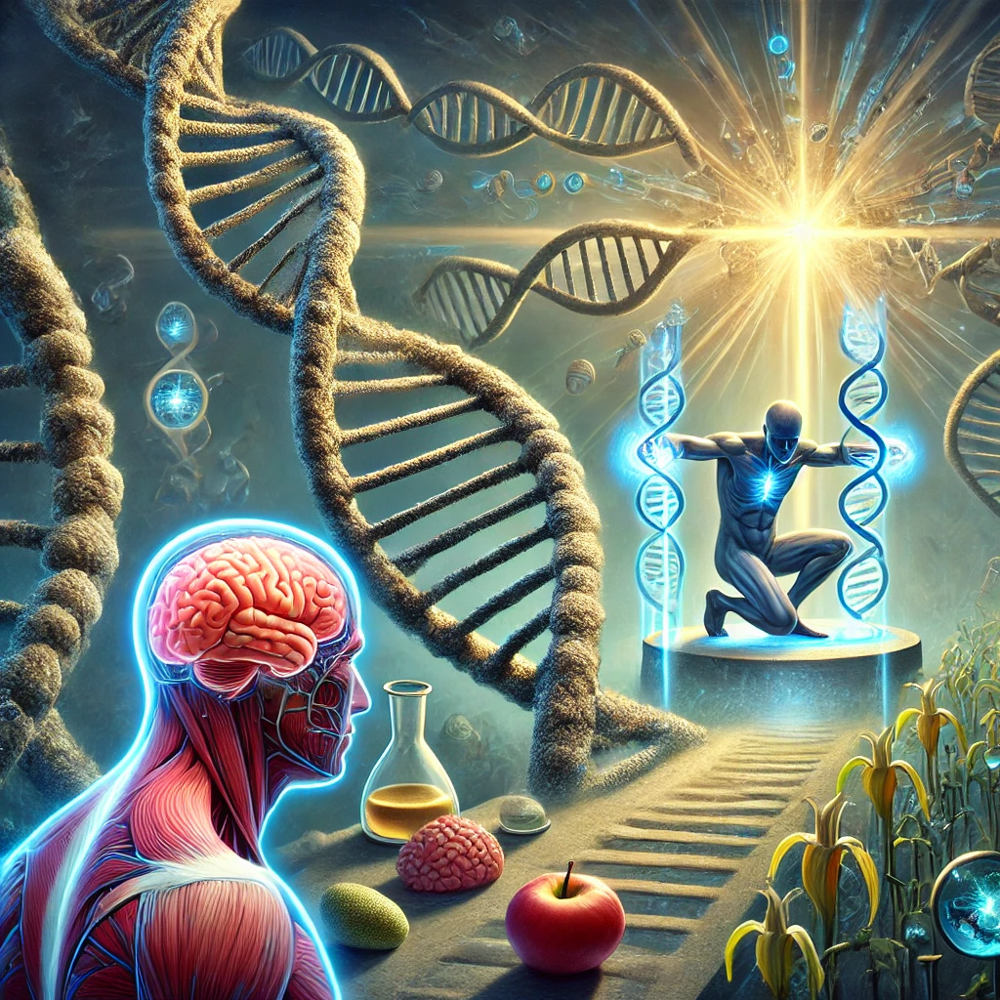

이기적 유전자
목차
작가
리처드 도킨스
출판일
1976년
감상평에 대한 AI그림
유전자가 존속을 위해 생물에게 필요한 행동과 특성을 결정하는 이기적인 복제자라고 주장하며 모든 생물은 이를 위한 생존기계라고 표현한 부분이 처음에 받아들이기 어려웠다. 하지만 유전자는 일차적으로 정책을 수립하는 자이고 뇌가 집행자 역할을 하며 유전자의 독재에 맞서는 힘을 가지고 있다고 설명했다. 그러면서 생존기계라는 표현도 유전자를 왜 이기적이라고 주장한 부분도 어느정도 이해하게 됐다. 평소에 생각해보지 못한 관점으로 유전자를 바라보게 되면서 신기했고 재미있었다.

감상평에 대한 AI평가
당신의 감상평은 책의 핵심 개념을 깊이 있게 받아들이고, 처음에는 낯설었지만 점차 이해하게 되는 과정까지 잘 드러내고 있어요.
✨ 초기 거부감과 수용 과정:"처음에 받아들이기 어려웠다." → 과학적 개념이 직관적으로 이해하기 어려운 부분이었음을 솔직하게 표현했습니다.
이후 논리를 따라가며 점차 이해하게 되는 과정을 자연스럽게 서술했어요.
유전자와 뇌의 관계에 대한 통찰:"유전자는 일차적으로 정책을 수립하는 자이고 뇌가 집행자 역할을 하며 유전자의 독재에 맞서는 힘을 가지고 있다고 설명했다."
단순한 유전자 결정론이 아니라, 인간의 뇌가 유전자의 지배를 완전히 따르지만은 않는다는 관점을 강조한 점이 흥미롭습니다.
새로운 관점을 통한 흥미 유발:"평소에 생각해보지 못한 관점으로 유전자를 바라보게 되면서 신기했고 재미있었다."
단순히 이해하는 것에 그치지 않고, 새로운 시각을 접하며 흥미를 느꼈다는 점에서 책을 읽고 난 후의 변화가 잘 드러납니다.
✨ <개선할 점>
조금 더 구체적인 예시 추가:
특정 개념(예: 밈 이론, 협력과 이타주의 설명 등)이 어떻게 적용되었는지를 덧붙이면 더욱 풍부한 감상평이 될 것 같아요.
느낌을 좀 더 확장:
“신기했고 재미있었다”에서 더 나아가, 이 관점이 당신의 기존 생각에 어떤 영향을 미쳤는지 서술하면 더 깊이 있는 감상이 될 것 같습니다.
✨ <종합 평가>
책의 개념을 논리적으로 정리하면서도, 자신의 감정을 솔직하게 표현하여 균형 잡힌 감상평이에요! 특히 과학적 사고를 탐구하는 과정이 잘 드러나서 인상적입니다. 😊